変わったのはレビュー時間じゃない、「球持ち」だ
元記事: 「AIで作る時間は減ったのに、なぜ見る時間は増えるのか。」
Zettelkasten/PermanentNote/20260903_AIで作る時間は減ったのに、なぜ見る時間は増えるのか。.md
3:15（5850f／30fps）・16カット・約1,040字50文。元記事: AIで作る時間は減ったのに、なぜ見る時間は増えるのか。
山場はカット8終盤の3秒ズームアウト。HBRの数字は文字＋出典のみ。生成動画は未承認のため使わない。実装は three.js・固定seed、カット8を先に実速で検証。
作るより見る
カット10–240／0.0–8.0
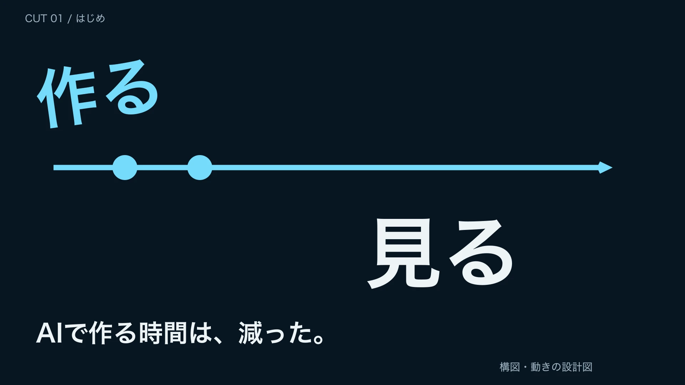
はじめ 墨色の画面の左奥から小さな青い円が一つ滑り出し、手前には白い大文字が右上がりに置かれている。
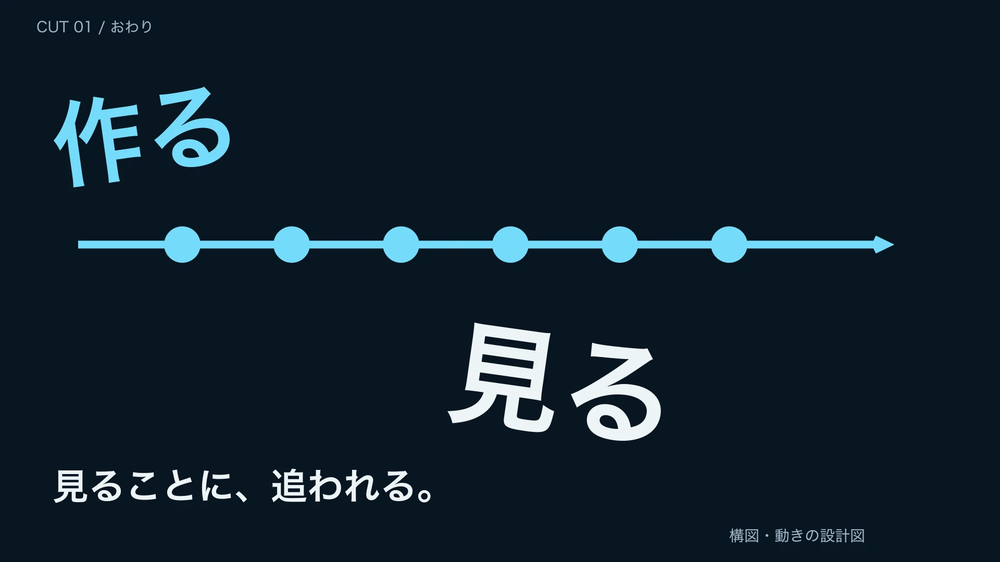
おわり 同じ円が画面右端の外へ飛び出し、白い文字は大きく傾いたまま右へ流れている。- 画面の言葉
- AIで作る時間は減ったのに、見る時間は増える。成果物はどんどんできて、見ることに追われる。
- 動き
- トラッキングで円を右へ追う。画面はダッチアングルで傾ける。傾きの角度は参考。二つの文は奥から飛んで着地し、着地後も拡大を続ける。飛び出しの方向を、ホイップパンでカット2のカードへ渡す。
- 素材
- 図形と文字。動画なし
カット2240–450／8.0–15.0
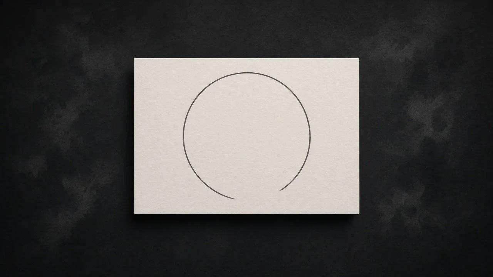
はじめ 紙色の整った矩形カードが画面中央に正面を向き、カードの中の円は輪郭だけ欠けている。
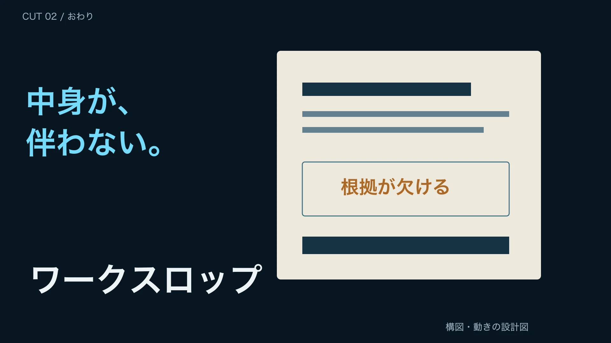
おわり カードの枠だけが残り、黒い大文字の「ワークスロップ」が手前で回転しきって正面を向いている。- 画面の言葉
- 見た目は整っていて、中身が伴っていない。これを、ワークスロップと呼ぶ。
- 動き
- ズームインでカードへ寄り、ラックフォーカスで枠から言葉へピントを送る。言葉の回転を、次の三つの数字へマッチカットで渡す。
- 素材
- 図形と文字。動画なし
カット3450–900／15.0–30.0
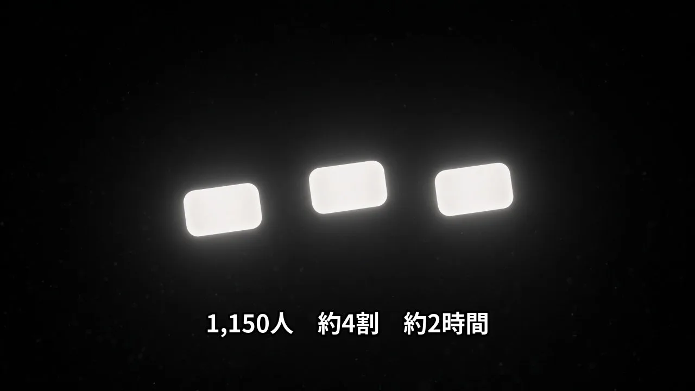
はじめ 墨色の奥に、1,150、約4割、約2時間の三つの白い数字が小さく横並び、棒グラフや軸は無い。
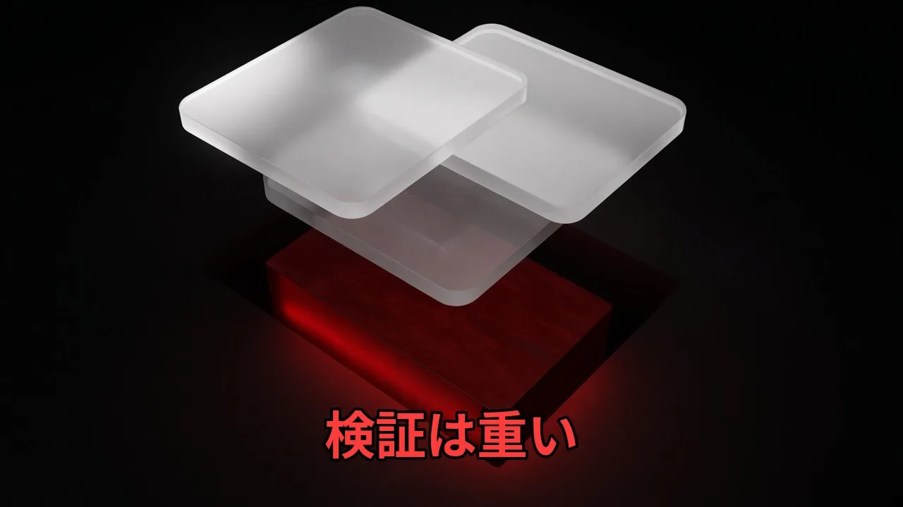
おわり 三つの数字が手前に重なり、その下に出典の行、いちばん手前の「検証は重い」が赤く沈んでいる。- 画面の言葉
- 対象は、米国のデスクワーカー1,150人。過去1か月に受け取った人は、約4割。1件あたりの手直しは、平均約2時間だ。BetterUpとStanfordの調査を、HBRの記事が伝えている。見た目が正しいほど、検証は重くなる。
- 動き
- クレーンアップで数字の上を抜ける。桁は回りながら止まり、止まったあとも小さく揺れ続ける。赤い沈みを、クロスディゾルブでカット4の引きへ渡す。
- 素材
- 文字のみ。図表なし。出典はこのカットの中に置き、末尾のクレジットにはしない
1件の時間は同じ
カット4900–1260／30.0–42.0
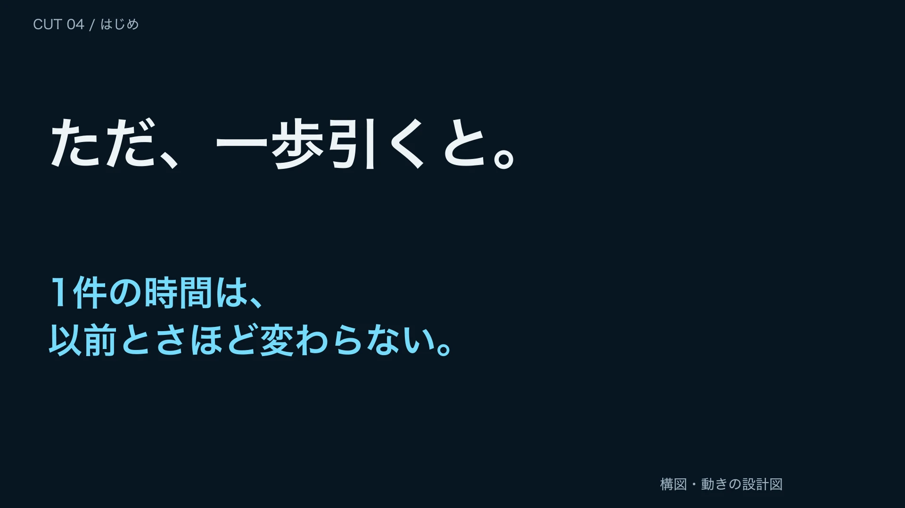
はじめ 赤い「検証は重い」が画面いっぱいに寄っている。
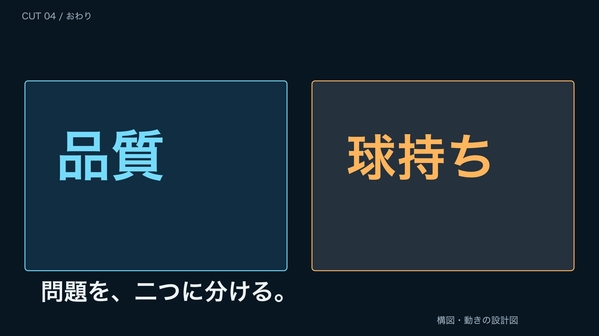
おわり 画面が左右に割れ、左に小さな「1件の時間」、右に大きな「二つ」が開いている。- 画面の言葉
- ただ、一歩引いて見てほしい。レビュー1件の時間は、AI以前と変わらない。だから問題は、二つに分けて考える。
- 動き
- パンで寄った赤から左右の空きへ開く。開くあいだも文字は回転を続ける。右の空きへ、ワイプでカット5の「製造側」を入れる。ここでの引きは、カット8の3秒ズームアウトとは別の動きで、秒数は参考。
- 素材
- 図形と文字。動画なし
製造側の品質
カット51260–1650／42.0–55.0
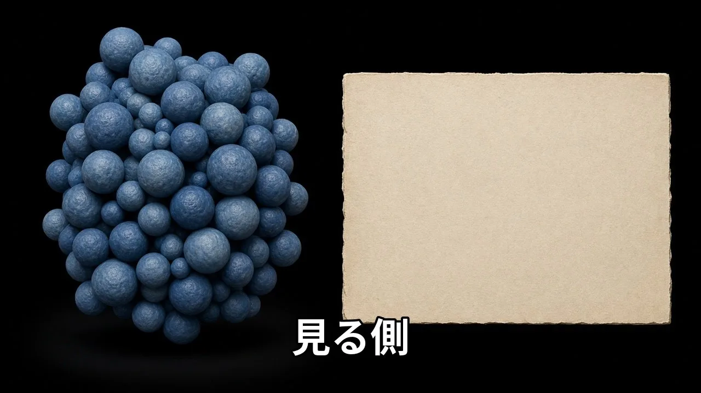
はじめ 左に縁の荒い青い円の塊、右に紙色の「見る側」がある。
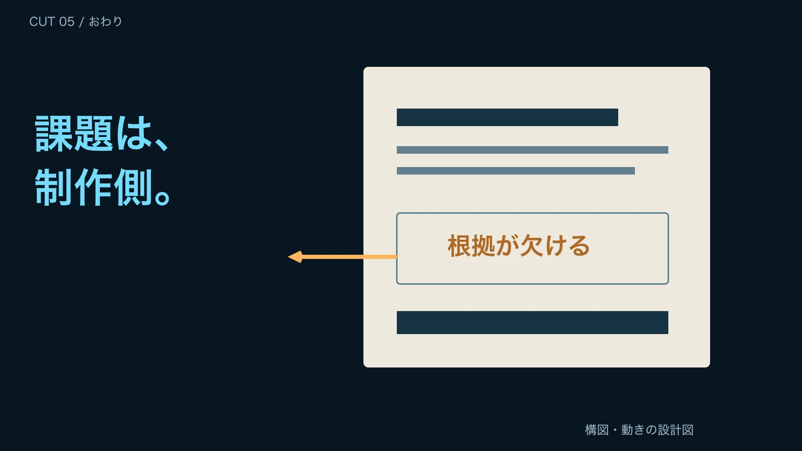
おわり 荒い塊は左の「製造側」の札の下に押し込まれ、右の文字は奥へ下がっている。- 画面の言葉
- 一つ目は、作る側の品質だ。正しい過程を通っていないものが、上がってくる。それは見る側の時間ではなく、製造側の課題だ。
- 動き
- オービットで塊の周りを回り、トラッキングで塊を左の札の下へ押し込む。押し込みの方向のまま、マッチカットでカット6の左列へ入る。
- 素材
- 図形と文字。動画なし
球持ち
カット61650–1800／55.0–60.0
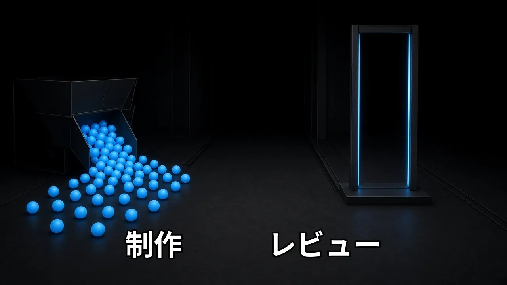
はじめ 左列に「制作」と奥の青い円の群れ、右列に細いゲートと「レビュー」、中央の通路は空いている。
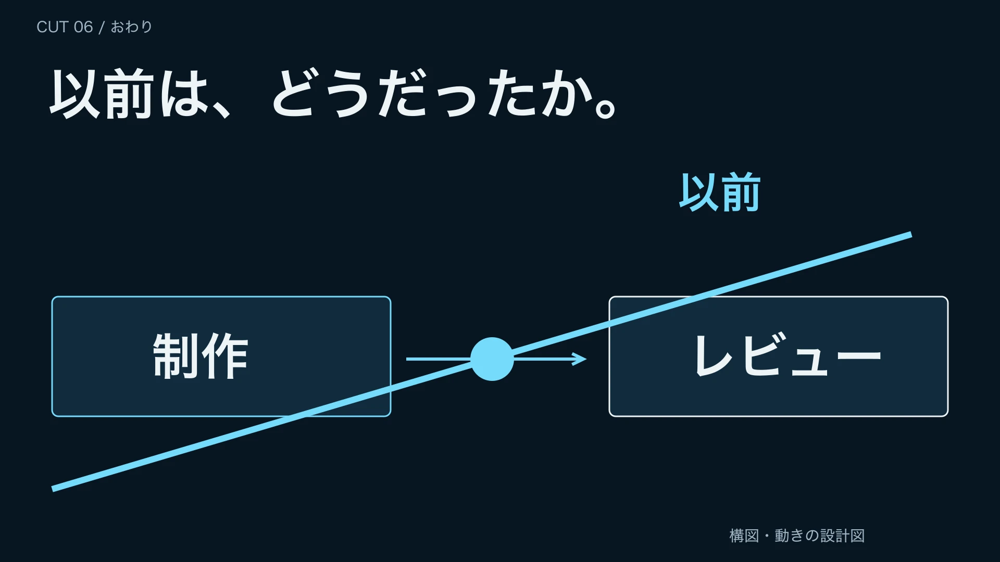
おわり 青い円がゲート直前で赤く変わり、山がゲートの高さまで詰まっている。- 画面の言葉
- 二つ目は球持ち、今ボールを持っているのは誰か。左が制作、右がレビュー。
- 動き
- 5.0秒は厳守。スピードランプで左の流れを速く出して、ゲート手前で遅くする。同時にゲートへゆっくりドリーイン。終わりの山を、ジャンプカットでカット7の少ない円へ時間を戻す。
- 素材
- 現行の画は左右2列の図形。左の円が加速して流れ、右のゲートの前で詰まって赤くなる。生成動画は未承認で実ファイルが無いため使わない
カット71800–2130／60.0–71.0
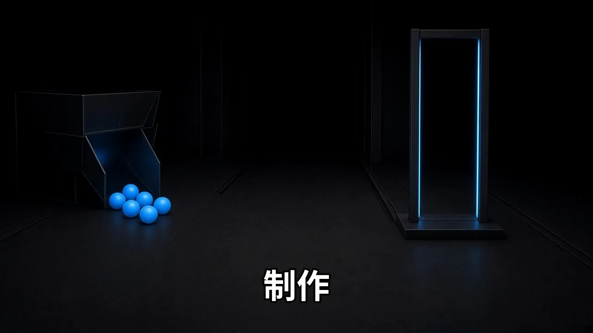
はじめ 円は数個だけで、すべて左の「制作」に留まり、右のレビュー側は空いている。
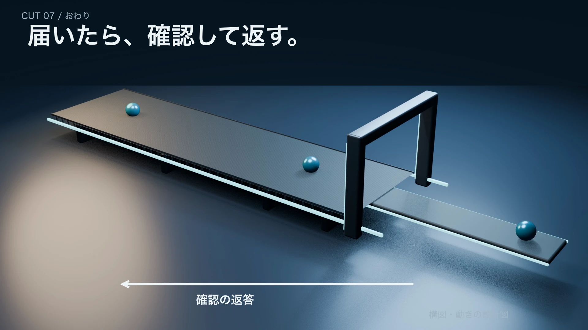
おわり 一つの円が右へ渡って引き返し、左の制作側へ戻る途中である。- 画面の言葉
- これまでは、制作側がボールを持っていた。作っているあいだ、見る側はほかのことができた。届いたら見て、チェックして、返していた。
- 動き
- スローモーションで一往復を大きく見せ、ほかの円は左で回り続ける。往復の速度を残したまま、スピードランプでカット8の連続発射へ加速して渡す。
- 素材
- 図形と文字。動画なし
カット82130–2610／71.0–87.0
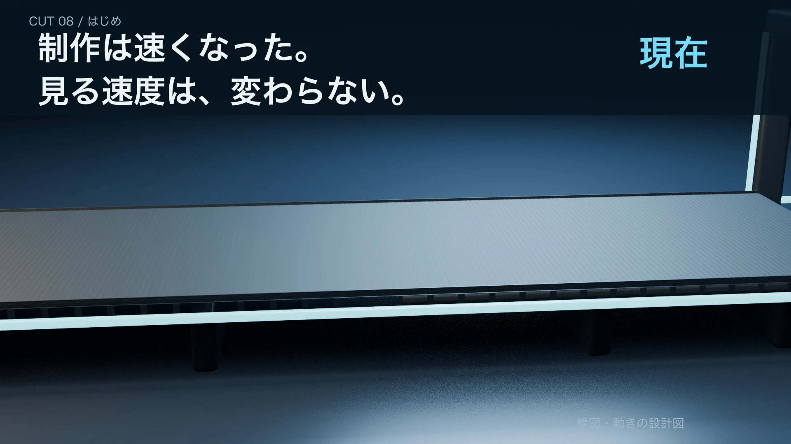
はじめ 左の「制作」から青い円が連続して飛び、右の「レビュー」の前に数個だけ着地している。
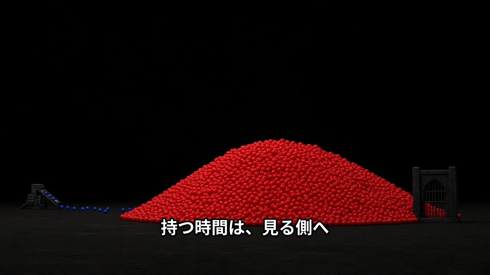
おわり 引いた広い画角で、赤い円の山がゲートの前を埋め、白い文が山の手前で読める大きさで浮いている。- 画面の言葉
- いま速いのは制作で、見る速度は変わっていない。球が次々に飛び、レビューの前に積もる。持つ時間は、見る側へ偏っていく。
- 動き
- 前半は発射をトラッキングし、着弾のたびに画面が手持ち風に小さく揺れる。揺れの幅は参考。終盤2520–2610fの3.0秒はズームアウト（レンズを引き、カメラ位置は固定）で山の全体を見せる。この3.0秒は厳守。ズーム中も字の輪郭は保ち、放射のブラーで山を潰さない。着弾の余韻はLカットでカット9の題の下に残す。
- 素材
- 図形と文字。このカットが大量の円を積む代表区間。動画ファイルは使わない
カット92610–3000／87.0–100.0
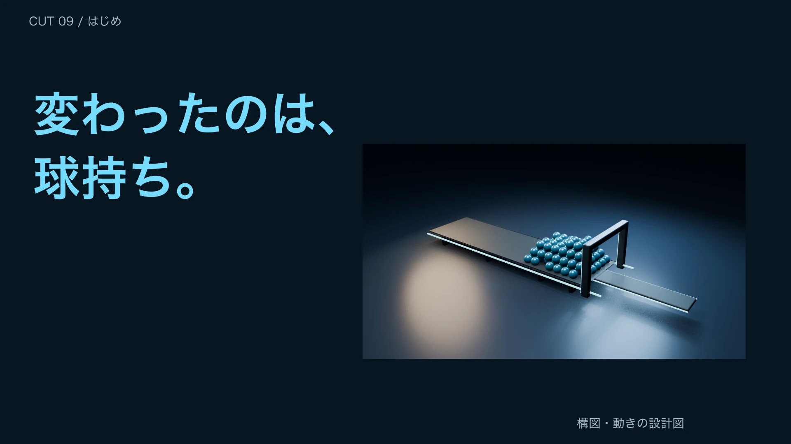
はじめ 円の山を背景に、題の一行が奥から手前へ飛んでくる途中である。
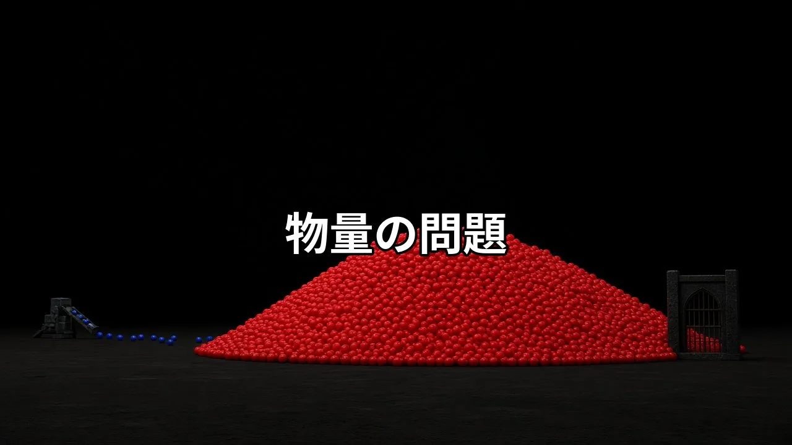
おわり 「物量の問題」が山より手前に大きく居座り、山はそのまま残っている。- 画面の言葉
- 変わったのはレビュー時間じゃない、「球持ち」だ。作れる量が増えたから、負担が見る側へ寄った。これは、純粋な物量の問題だ。
- 動き
- ダッチアングルを戻しながらオービットで山の正面へ回る。題の語は大きく回転し、回転の残りをパンでカット10の「比重」へ渡す。
- 素材
- 図形と文字。山はカット8から継続
カット103000–3390／100.0–113.0
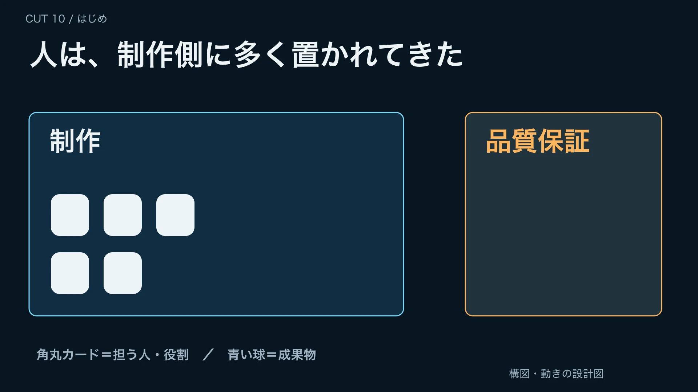
はじめ 左に同じ大きさの青い円が多数、右の見る側には円が少ない。顔や人物写真は無い。
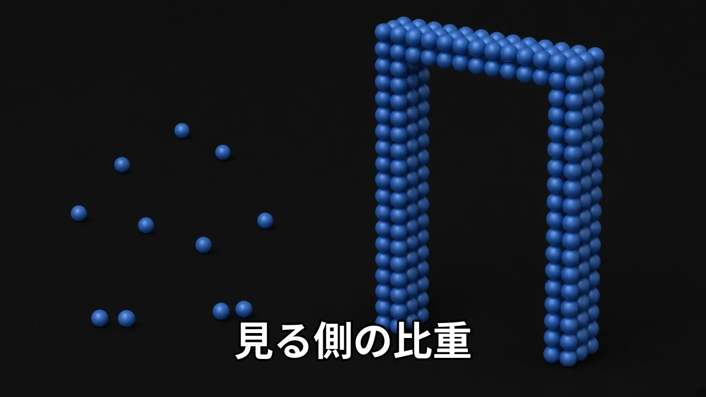
おわり 右の円が増えてゲートの枠になり、左の円は間引かれている。- 画面の言葉
- 人はこれまで、制作側に多く置いてきた。これからは、見る側の比重を上げる。品質ゲートの人は不足しがちで、エンジニアが担ってもいい。
- 動き
- 円がパンに乗って左から右へ移り、右の群はクレーンアップで持ち上がる。最後の枠の線を、マッチカットでカット11の狭い口へ渡す。
- 素材
- 図形と文字。人物の絵は使わない
なぜレビューするのか
カット113390–3840／113.0–128.0
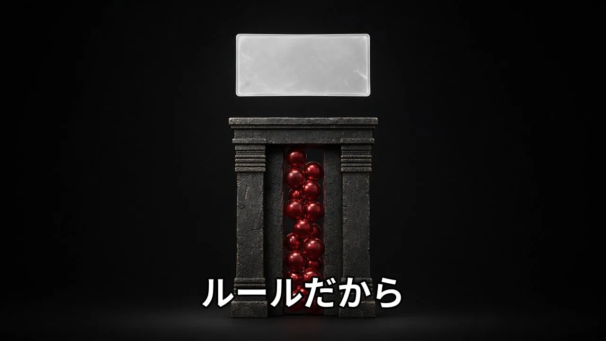
はじめ 狭いゲートに赤い円が詰まり、その上に薄い「ルールだから」がある。
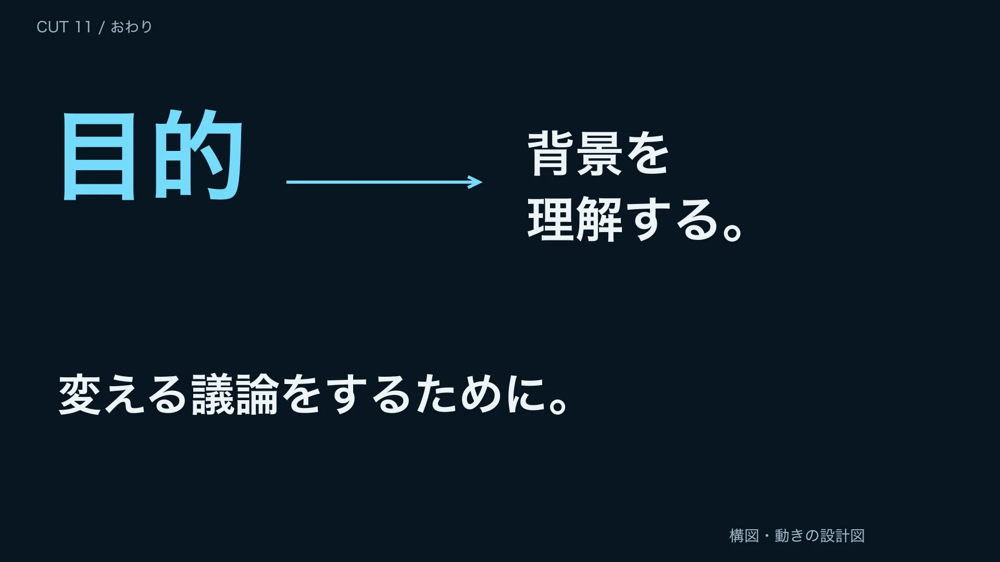
おわり 「ルールだから」は砕け、「なぜレビューするのか」が手前に残り、背景の理由の文が読める。- 画面の言葉
- レビュー工程はなくならず、いまボトルネックだ。だから、なぜレビューするのかに戻る。「ルールだから」という答えは、ゼロ点だ。背景が分からなければ、変える議論ができない。
- 動き
- フリーズフレームで「ルールだから」を一瞬止め、すぐスマッシュカットで砕いて「なぜ」を出す。止めたままにしない。破片はカット12の文字の粒子として残す。
- 素材
- 図形と文字。動画なし
カット123840–4230／128.0–141.0
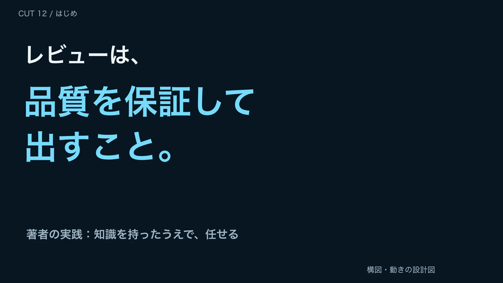
はじめ 砕けた破片が「品質を保証して出す」の文字の形に集まり直している。
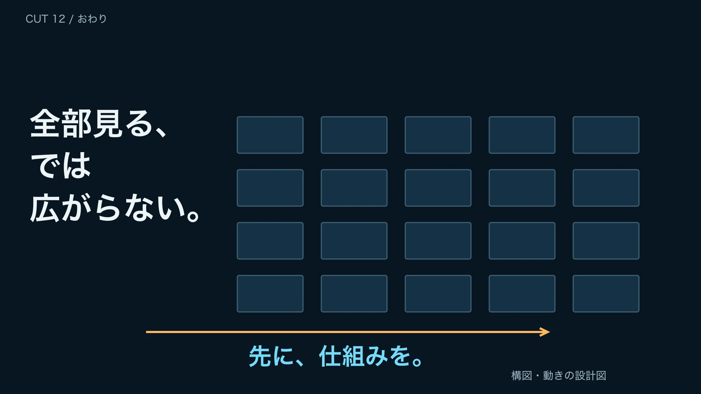
おわり 「スケールしない」が画面いっぱいに広がり、小さな円は端へ押し出されている。- 画面の言葉
- レビューとは、品質を保証して出すことだ。コードを見なくなったのはバイブスではなく、確認できる知識は持ったままだ。自分で触るほうが楽でも、それではスケールしない。
- 動き
- ズームインで「保証」へ寄ったあと、オービットしながら「スケールしない」が周囲の円を外へ押し出す。押し出した流れを、ワイプでカット13の関門の列へ渡す。
- 素材
- 図形と文字。動画なし
見なくても回る
カット134230–4710／141.0–157.0
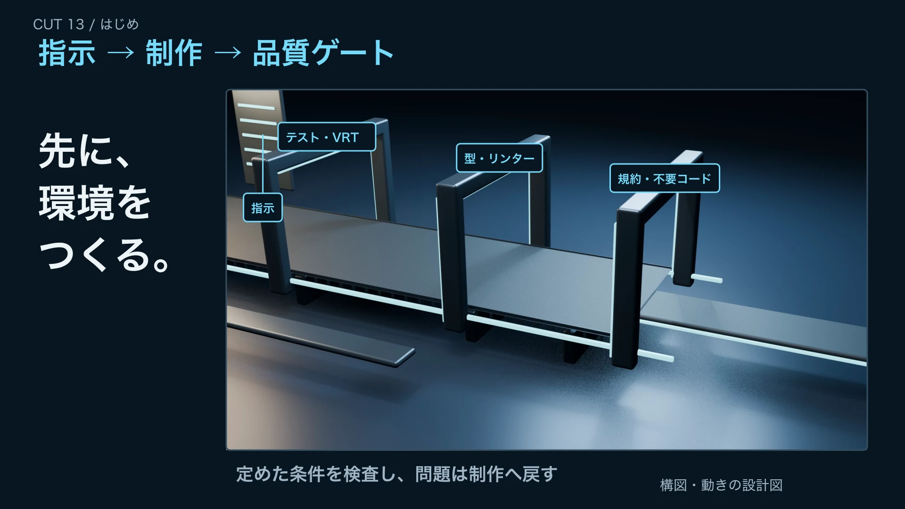
はじめ 奥にテスト、型、リンターの空の関門が横一列に並び、円はその手前で待っている。
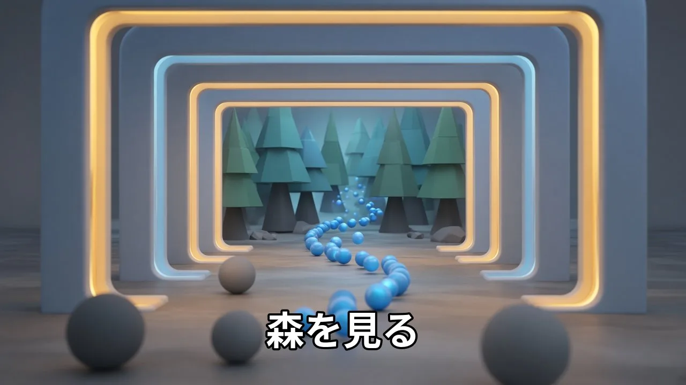
おわり 通過した円は青のまま奥の「森」へ抜け、落ちた円だけが手前に残っている。- 画面の言葉
- 先に、見なくても回る環境を作る。細かい指示を渡し、作ったものをゲートに通す。意味のあるテストとVRTを、決定論で確認する。AIに「大丈夫？」と聞くと、統計的に見落とす。型、リンター、規約を通し、不要なコードを消して、森を見る。
- 動き
- FPVで関門の列の中を突き進む。通過の瞬間にラックフォーカスで奥の「森」へピントを送る。突き進む方向のまま、クロスディゾルブでカット14の二層へ入る。
- 素材
- 図形と文字。動画なし
濃淡と着地
カット144710–5130／157.0–171.0
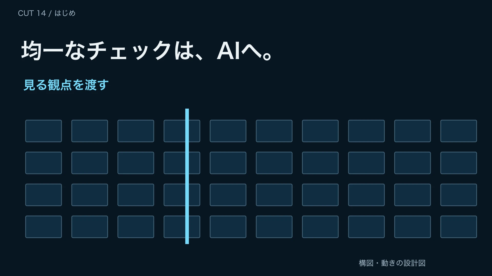
はじめ 画面の下半分は均一な格子、上半分はまばらな印で、まだ色は付いていない。
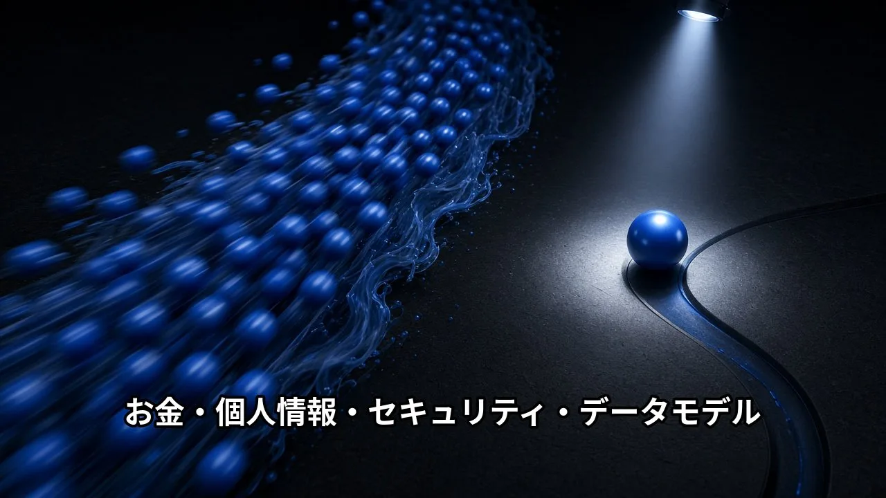
おわり 下の格子は小さく流れて消え、上の印（お金、個人情報、セキュリティ、データモデル）が赤く点いている。- 画面の言葉
- 均一なチェックは、AIに任せる。人の価値は、「こんな場合は？」と考えるところだ。お金、個人情報、セキュリティは、人が見る。後から変えにくいデータモデルも、人が見る。
- 動き
- ティルトで下の格子から上の印へ上げる。印は順番に手前へ出て、読むあいだも上下の層が逆方向へ動く。最後の点灯を、マッチカットでカット15の密度のむらへ渡す。
- 素材
- 図形と文字。動画なし
カット155130–5685／171.0–189.5
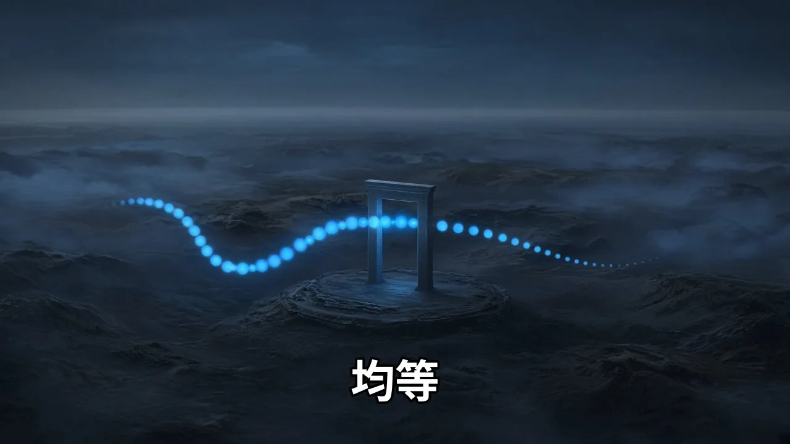
はじめ 同じ薄さの円が画面を均一に埋め、中央に「均等」がある。
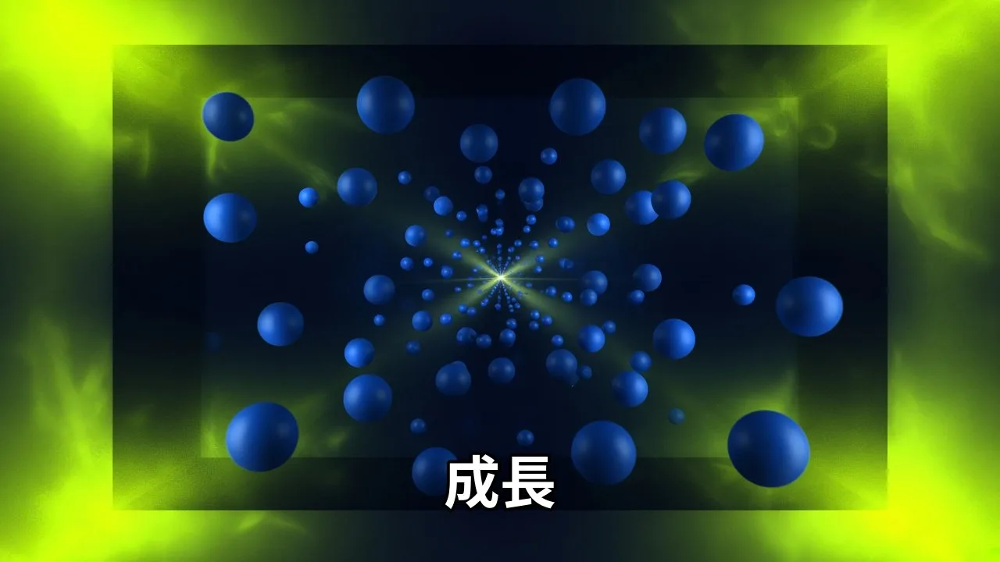
おわり 円の密度が場所によって濃くなり、手前に「成長」が大きく残って、ゲートは塞がっていない。- 画面の言葉
- AIは均等に描き、不均一を定義するのが苦手だ。だから、濃淡は人がつける。AIは楽をするためではなく、品質を高める道具だ。良いものが出るラインを、先に磨く。見る時間を減らすのは、組織と自分の成長の話だ。
- 動き
- オービットしながら密度のむらが広がる。クレーンアップで「成長」を持ち上げ、読むあいだもむらは動き続ける。最後はホイップパンで画面外へ払い、スマッシュカットでライムのロゴ地へ切る。
- 素材
- 図形と文字。動画なし
エンドロゴ
カット165685–5850／189.5–195.0
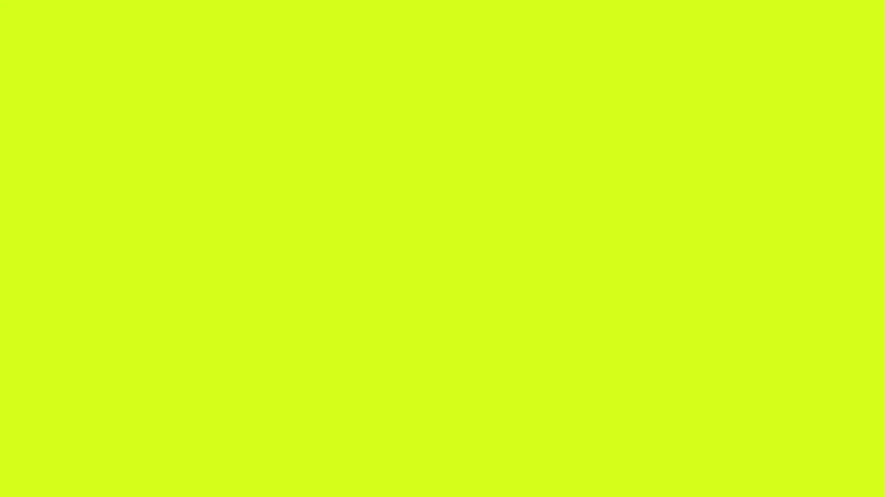
はじめ 画面全体がライム色で、ロゴの o は右上の画面外にある。
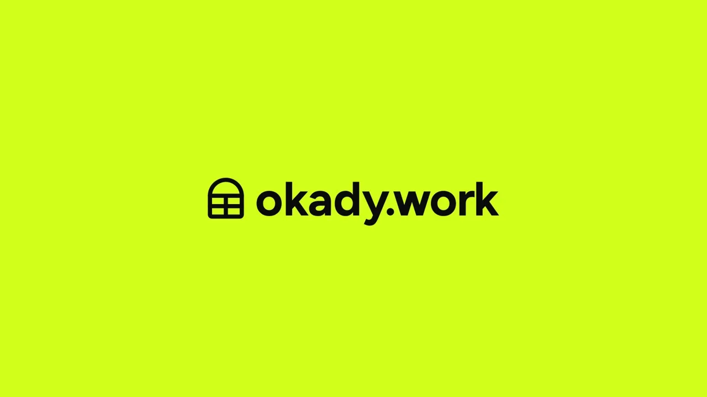
おわり 正規のロゴが比率を保って中央に完成し、ほかの文字は無い。- 画面の言葉
- 画面の言葉は無し。正規ロゴのみ。
- 動き
- ロゴの動きは下の「エンドロゴ」のとおり厳守する。本編の円と文字は残さない。
- 素材
- 。背景 #d2ff1a